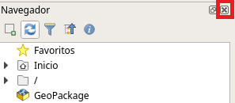
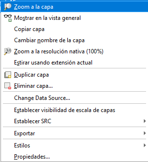

Taller 2: Modelos de datos geoespaciales
Introducción a la Tecnología de Información Geográfica (IMSE1014)
1 Introducción
Objetivo: Explorar y comprender los modelos de datos geoespaciales
Los sistemas de información geográfica modelan el mundo real con representaciones de objetos como lagos, carreteras y pueblos. Los modelos de datos geoespaciales son los medios utilizados para representar estas características. Se componen de dos partes: objetos espaciales y atributos que, cuando se combinan, crean un modelo de realidad.
Dos partes del modelo de datos geoespaciales.
Hay dos modelos principales de datos geoespaciales: vectorial y ráster.
Modelo de datos vectoriales:mejor para modelar objetos discretos. Los datos vectoriales se presentan en tres formas:punto,líneaypolígono.Modelo de datos ráster:este modelo es el mejor para modelar objetos continuos. Un ráster está compuesto por una matriz de celdas contiguas, con cada celda (píxel) que tiene un único valor numérico.
Este taller presentará a los estudiantes la interfaz QGIS, que se utiliza durante todo el curso.
Es importante aprender los conceptos en este taller ya que los talleres futuros requerirán las habilidades cubiertas en este taller.
Este laboratorio incluye las siguientes tareas:
Actividad 1:conocer la interfaz de QGISActividad 2:aprenda a trabajar con el panel navegador QGIS.Actividad 3:familiarizarse con los modelos de datos geoespaciales.Actividad 4:visualización de datos geoespaciales en el lienzo de QGIS.
2 Datos
Para el taller utilizará modelos de datos geoespaciales de tipo vectorial y raster.
datos vectoriales: desde la IDE del Ministerio de Medio Ambiente (https://www.ide.cl/index.php/medio-ambiente) debe descargar las siguientes capas:cuencas BNA: delimitación de las cuencas hidrográficas de Chile. Descargar acáestaciones de calidad de aire: estaciones de monitoreo del Sistema de Información Nacional de Calidad de aire (SINCA) . Descargar acásendero de Chile: Conjunto de rutas que atraviesan el país, contribuyendo a la protección de la naturaleza, a través de la generación de un espacio de acceso público. Esta información se encuentra para todo el país. Descargar acádata_vectorial_taller2.gpkg: archivo en formato geopackage. Descargar acá.
datos raster:imágen aérea:descargue la siguiente imágen https://shorturl.at/aQY06precipitación acumulada mensual Chile Febrero 2024: Descargar acátemperatura promedio mensual Chile Febrero 2024: Descargar acá
3 Actividad 1: Vista general de la interfaz
Exploraremos la interfaz de usuario de QGIS, de forma que se familiarice con los menús, barras de herramientas, lienzo del mapa y lista de capas, que forman la estructura básica de la interfaz.
Los elementos identificados en la figura superior son:
- Navegador
- Barras de herramientas
- Panel de capas
- Barra de estado
- Lienzo del mapa
- Barra de localización
3.2 Barras de herramientas
Sus conjuntos de herramientas más utilizadas se pueden convertir en barras de herramientas para un acceso más rápido. Por ejemplo, la barra de herramientas Proyecto le permite guardar, abrir, imprimir e iniciar un nuevo proyecto. Puede fácilmente personalizar la interfaz para ver sólo las herramientas que use más a menudo, añadiendo o eliminando barras de herramientas según necesite mediante el menú ->Ver -> Barras de herramientas.
Incluso si no son visibles en una barra de herramientas, todas sus herramientas estan disponibles a través de los menús. Por ejemplo, si elimina la barra de herramientas Archivo (que contiene el botón Guardar), aún podrá guardar su mapa al hacer clic en el menú ->Proyecto y luego en ->Guardar.
3.3 Panel de capas
En el panel de capas puede ver una lista, en cualquier momento, de todas las capas que están disponibles.
Expandiendo los elementos colapsados (haciendo clic en la flecha o símbolo más a su lado) se obtiene más información sobre el aspecto actual de la capa.
Un clic derecho sobre una capa mostrará un menú con muchas opciones extra. ¡Pronto estará usando algunas de ellas, así que écheles un vistazo!
Nota: Una capa vectorial es un conjunto de datos, normalmente de un tipo específico de objetos, tales como carreteras, árboles, etc. Una capa vectorial puede consistir en puntos, líneas o polígonos.
3.4 La barra de estado
Muestra información sobre el mapa actual. También le permite ajustar la escala del mapa y ver las coordenadas del cursor del ratón en el mapa.
3.5 El lienzo del mapa
Aquí es donde se muestra el mapa con las distintas capas/temas.
3.6 Barra de localización
Dentro de esta barra puede acceder a casi todos los objetos de QGIS: capas, características de capa, algoritmos, marcadores espaciales, etc. Verifique todas las diferentes opciones en la sección Configuración del localizador en el Manual del usuario de QGIS.
5 Actividad 3: familiarizarse con los modelos de datos geoespaciales
Ahora que está familiarizado con el diseño básico del navegador QGIS, exploraremos algunos datos geoespaciales.
- Echemos un vistazo más de cerca a estos datos actualmente enumerados en el navegador QGIS.
- Seleccione la capa
Cuencas_BNA.shpen el Árbol de archivos. Activa el control de propiedades y selecciona la pestaña de metadatos. Esto le brinda información básica sobre el conjunto de datos.
Notará que el tipo de almacenamiento es el archivo de formato ESRI Shapefile. La ventana de visualización también le dice que tiene un tipo de polígono de geometría y tiene 139 objetos (que se muestran en la figura a continuación).
Además de los modelos de datos (vector y ráster), debemos comprender los formatos de archivo. Algunos formatos de archivo están diseñados para almacenar datos vectoriales y otros, datos ráster. Los shapefiles son archivos de formato vectorial. De hecho, son probablemente el formato de archivo vectorial más común.
Un shapefile individual solo puede contener un tipo de geometría (polígono, línea o punto). Un shapefile es en realidad una colección de archivos en la computadora con un nombre común, pero con diferentes extensiones.
Ahora seleccione
EstacionesdeCalidaddeAire.shp. Verá que esto también es un ESRI Shapefile pero que es un conjunto de datos de puntos con 153 objetos.Seleccione
Sendero_de_Chile.shp. Este es un Shapefile ESRI con geometría de línea y 304 objetos.Seleccione
Cuencas_BNA.shpnuevamente y haga clic en la pestaña Vista previa. Esto le muestra las características espaciales de este conjunto de datos SIG (que se muestra en la figura a continuación)
- Haga clic en la pestaña Atributos. Esto le muestra el otro componente del modelo de datos, los atributos. Cada fila corresponde a una entidad u objeto de tipo polígono. Las columnas son cosas que sabemos sobre los polígonos, como el nombre de la cuenca o la superficie (ver la figura a continuación).
- Seleccione el conjunto de datos
3727d67a-8ca7-46e1-9e7e-74087101cce1.tif. Haga clic en la pestaña Vista previa. Este es un ejemplo de un dataset ráster. Como una fotografía, está compuesta de celdas (pixeles). Este raster es una imagen satelital de un sector agrícola en la provincia de Talagante, Región Metropolitana (que se muestra en la figura a continuación).
Veamos los formatos de archivo con más detalle.
Seleccione la carpeta
taller2/dataen el árbol de archivos y explore las subcarpetas. Si tienes activado elControl de propiedadesse mostrará todo lo que está disponible cuando se selecciona una carpeta (ver figura a continuación).Ahora la ventana de visualización le muestra lo que vería en el Explorador de Windows.
Centrarse en los archivos de la carpeta Cuencas_BNA. Observe que el Árbol de archivos muestra por ejemplo el Shapefile como Cuencas_BNA.shp, mientras que la Ventana de visualización muestra cinco (o más) archivos llamados Cuencas_BNA. Estos son todos los archivos que componen el Shapefile. El árbol de archivos simplifica la vista de sus datos mostrándole solo el archivo .shp. Para obtener más información sobre los archivos de formato ESRI, consulte este enlace http://en.wikipedia.org/wiki/Shapefile
6 Actividad 4: Visualización de datos geoespaciales en el Lienzo de QGIS
Ahora que sabe cómo se almacenan los conjuntos de datos geoespaciales en su computadora, veamos qué aspecto tienen los datos que contienen. La siguiente sección le presentará como visualizar datos en el lienzo de QGIS Desktop.
- QGIS tiene tres secciones principales: el (1) Navegador, (3) Panel Capas y el (5) lienzo del mapa.
- La interfaz de QGIS la puede configurar a su gusto, por ejemplo puede cerrar algunos paneles. Por ejemplo, para cerrar el navegador localice el panel del navegador y haga clic en el pequeño botón
Xen la esquina superior derecha para cerrar el panel (consulte la figura a continuación).

Los paneles se pueden acoplar y desacoplar desde la ventana del escritorio QGIS. Para desacoplar un panel, haga clic y arrastre la barra de título superior del panel (descrita en la figura a continuación) y arrástrelo lejos de los lados. Cuando suelte el botón del mouse, el panel estará flotando libremente.
Para acoplar un panel flotante, haga clic y arrastre la barra de título, y arrastre el panel hacia el lado izquierdo o derecho del escritorio QGIS hasta que aparezca un rectángulo debajo del panel. Suelte el botón del mouse para acoplar el panel (la acción de acoplamiento se muestra en la figura a continuación).
Con la interfaz de escritorio QGIS personalizada, agreguemos algunos datos.
6.1 Datos vectoriales
QGIS tiene distintas maneras de agregar datos para cada modelo de datos geoespaciales principales (vector y ráster). Vamos a agregar la capa vectorial de las cuencas hidrográficas de Chile.
- Puede cargar una capa utiliznando el Administrador de fuentes de datos. Haga clic en el boton y luego seleccione el tipo de modelo de datos vectorial.
Esto abre la ventana Agregar capa vectorial. Agreguemos uno de los archivos de forma ESRI, que es un conjunto de datos basado en archivos.
Mantenga el tipo de fuente “Archivo”, que es el predeterminado. Luego haga clic en el boton explorar
Se abre la ventana Abrir una capa vectorial compatible con GDAL/OGR. (NOTA: GDAL/OGR es un proyecto FOSS4G con el único propósito de leer y escribir archivos de datos vectoriales y raster geoespaciales). La ventana está predeterminada para todos los archivos. Cuando exploró los datos de taller en el navegador de QGIS, notó que hay varios shapefiles en la carpeta de datos del taller. Tómese un momento para ver las otras opciones disponibles. Haga clic en el cuadro desplegable
Todos los archivosy cambie a ESRI Shapefiles (como se muestra en la figura a continuación).
Una vez que haya terminado de explorar, asegúrese de que todavía esté configurado en ESRI Shapefiles. Esto filtra lo que puede ver en la carpeta del taller para que solo vea los shapefiles.
Seleccione
Cuencas_BNA.shpy haga clic en Abrir (consulte la figura a continuación).
- Ahora regrese a la ventana
Agregar capa vectorialy haga clic enAbrirpara agregar los datos a QGIS (consulte la figura a continuación).
- Ahora verá
Cuencas_BNAen elPanel de Capasy los objetos del mapa que se muestran en ellienzode QGIS. Las capas vectoriales SIG vendrán con colores aleatorios. Aprenderá a cambiar el estilo de capa en un taller futuro.
- Examinemos los atributos. Haga clic derecho en la capa de las cuencas en el
Panel de Capas. Esto abre un menú contextual. Seleccione Abrir tabla de atributos (se muestra en la figura a continuación).
- Se abre la tabla de atributos. Recuerda que exploró este conjunto de datos con el
Navegadorde QGIS, tiene 139 entidades espaciales (139 polígonos). La tabla de atributos tiene 139 registros correspondientes. Hay columnas con el código de la cuenca (COD_CUEN), nombre de la cuenca (NOM_CUEN) y área en kilometros cuadrados (Area_km2). Cierre la tabla de atributos haciendo clic en el botón X en la esquina superior derecha.
Otra forma de interactuar con las características espaciales y los atributos es el botón
 Identificar objetos espaciales.
Identificar objetos espaciales.Haga clic en el botón
Haga clic en una de las entidades en el mapa. El panel Identificar resultados (que se muestra en la figura a continuación) le muestra los atributos de la función en la que hizo clic. >Nota: El panel de resultados Identificar puede estar inicialmente acoplado o flotante.
- Repita el mismo procedimiento y agregue las demas capas vectoriales
- EstacionesdeCalidaddeAire.shp
- Sendero_de_Chile.shp
Con el navegador de QGIS explore el archvio de tipo
geopackageque tiene extensión “.gpkg”,data_vectorial_taller2.gpkg“. Este tipo de archivo corresponde al formato”Geopackage” https://en.wikipedia.org/wiki/GeoPackage.Haga clic en la flecha junto al archivo
data_vectorial_taller2.gpkg
- Este tipo de archivo corresponde a una forma de base de datos y permite almacenar formatos de datos vectoriales y raster en el mismo archivo. En este caso se ve que contiene toda las capas vecotriales en un solo archivo.
6.2 Datos raster
Ahora aprenderá cómo agregar datos Raster a QGIS.
Utilice el Administrador de fuentes de datos para cargar los datos. Haga clic en el boton y luego seleccione el tipo de modelo de datos raster.
Se abre la ventana
Administrador de fuentes de datos rásteradmitidos por GDAL/OGR (que se muestra en la figura siguiente). Este es un flujo de trabajo muy similar a la adición de datos vectoriales.
QGIS utiliza
GDAL/OGRpara abrir archivos de tipo vectoriales y también raster.El filtro de datos ráster de la ventana está configurado para
Todos los archivosde manera predeterminada, para que vea todo el contenido de la carpeta (Figura siguiente).

Establezca el filtro en
Geo Tiff(¡Además, tenga en cuenta cuántos formatos leerá!) En SIG hay muchos más tipos de archivos ráster que vectoriales.Abra el archivo
3727d67a-8ca7-46e1-9e7e-74087101cce1.tif, corresponde a una imágen aérea de la región Metropolitana.Este raster cubre una parte del centro de la ciudad de Santiago. Haga clic con el botón derecho en el conjunto de datos
3727d67a-8ca7-46e1-9e7e-74087101cce1en el panel de capas y elija Zoom a la capa para hacer zoom en la extensión espacial de este ráster (como se muestra en la figura a continuación).

- Debería ver algo como en la figura siguiente

Ahora vamos a cargar otro tipo de datos raster, unos que tienen datos de precipitación y temperatura para Chile.
Abra el administrador de fuentes de datos, luego seleccione
rastery entipo de fuenteseleccioneProtocolo: HTTP, cloud, etc,..En el campo al lado dónde dice
URIcopie la URL del archivo almacenado en la nube https://chelsa-chile.s3.amazonaws.com/monthly/pre/CHELSA_pr_v2.1_20190601.tif.
- Haga clic en añadir, ahora se debe haber agregado una nueva capa.
Repita los mismo pasos para agregar los datos raster de temperatura https://chelsa-chile.s3.amazonaws.com/monthly/tas/CHELSA_tas_v2.1_20190601.tif
Explore las características de los datos raster.
7 Conclusión
En este taller exploró conjuntos de datos que utilizan los dos modelos de datos geoespaciales comunes: vectorial y ráster. También ha utilizado el navegador QGIS para obtener una vista previa de los conjuntos de datos. En futuros talleres, aprenderá a usar QGIS para hacer mapas y realizar análisis.